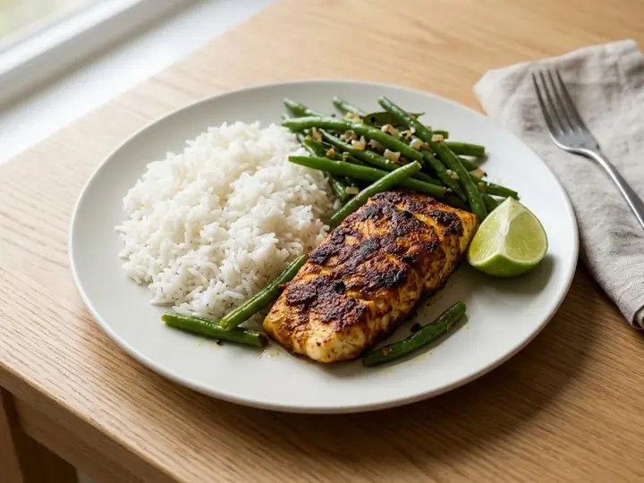

Sri Lanka · Fish · No. 121
Sri Lankan-Style Spiced Fish
A single portion of Sri Lankan cooking, ready in 23 minutes with 8 minutes of prep. Written for one, so there is nothing to halve and nothing to waste. It brings some heat.
Spicy
Method
- 1
Cook the rice according to the packet instructions, adding the green beans for the last 4 minutes.
- 2
Rub the fish with curry powder and turmeric.
- 3
Fry in a splash of oil over medium-high heat for 3–4 minutes each side until just cooked through and flaking easily.
- 4
Season to taste, then serve over the rice and beans with a squeeze of lime.
Find more like this